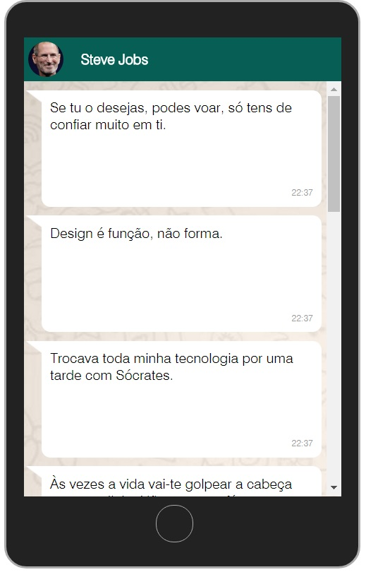

Incorpore frases em suas aplicações
API O Pensador é uma API - não oficial - para obtenção de frases do site "O Pensador".
A API utiliza
Todas as frases são do site O Pensador e devem ser referenciadas.
ajax para obetenção dos dados, assim é requedido suporte à linguagem PHP. Todas as frases são do site O Pensador e devem ser referenciadas.
Inicializar API
Visualize o Demo
Donwload API
Donwload API + Demo
Como utilizar a API
A API precisa ser executada em um servidor com suporte a PHP.
O script
opensador-api.js deve ser adicionado no seu código.
Configure o nome do autor com startAPI e
inicie a aplicação. Use APIready para implementar sua aplicação (veja nos exemplos).
<html> <head> <script src="opensador-api.js"></script> <script> startAPI("Steve Jobs"); function APIready(dados){ //Insert your logic here }; </script> </head> <body> </body> <html>
Nota:
Essa versão da API obtêm apenas dados da primeira página do autor.
Exemplo
Veja Exemplos do uso da API O pensador
